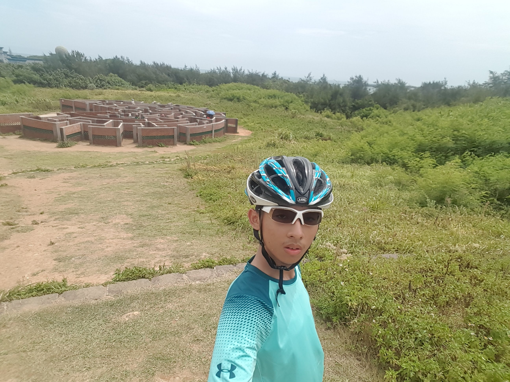
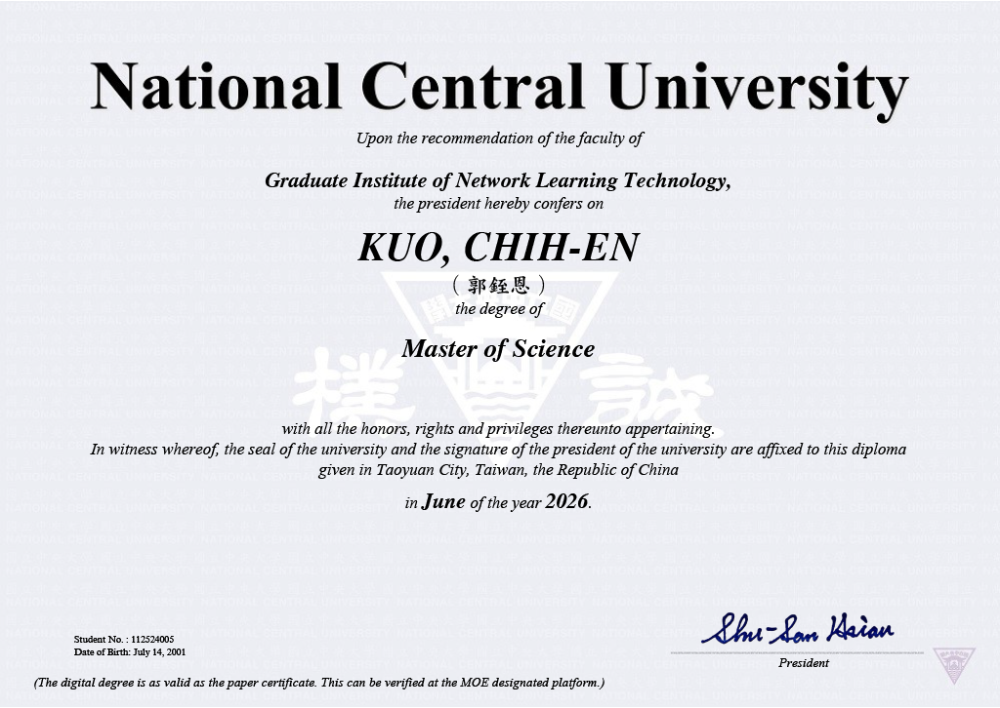
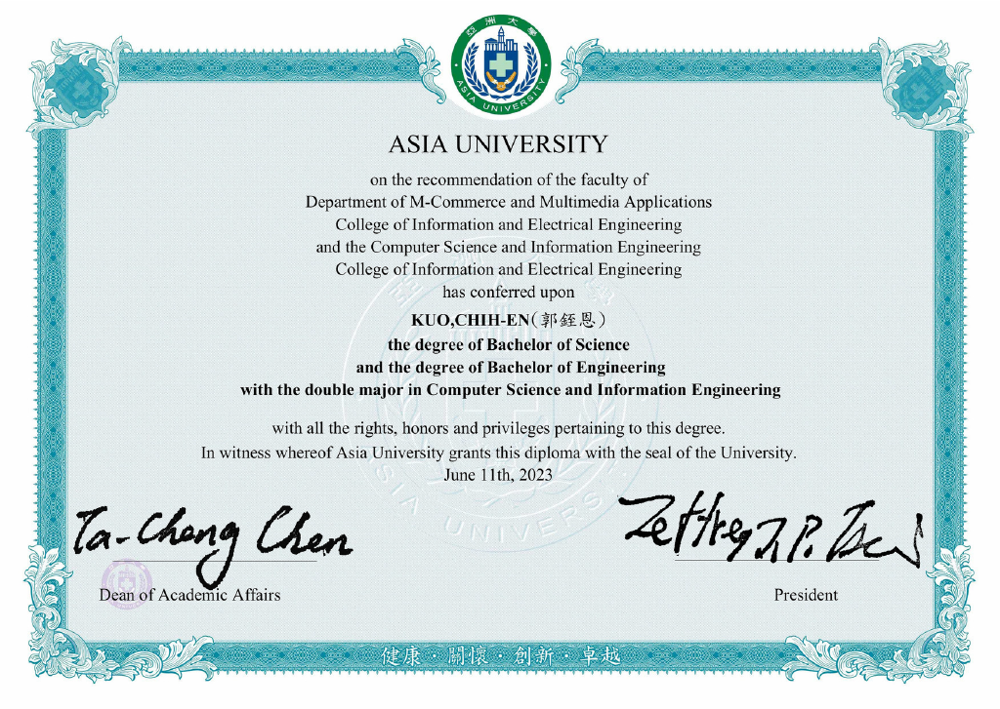
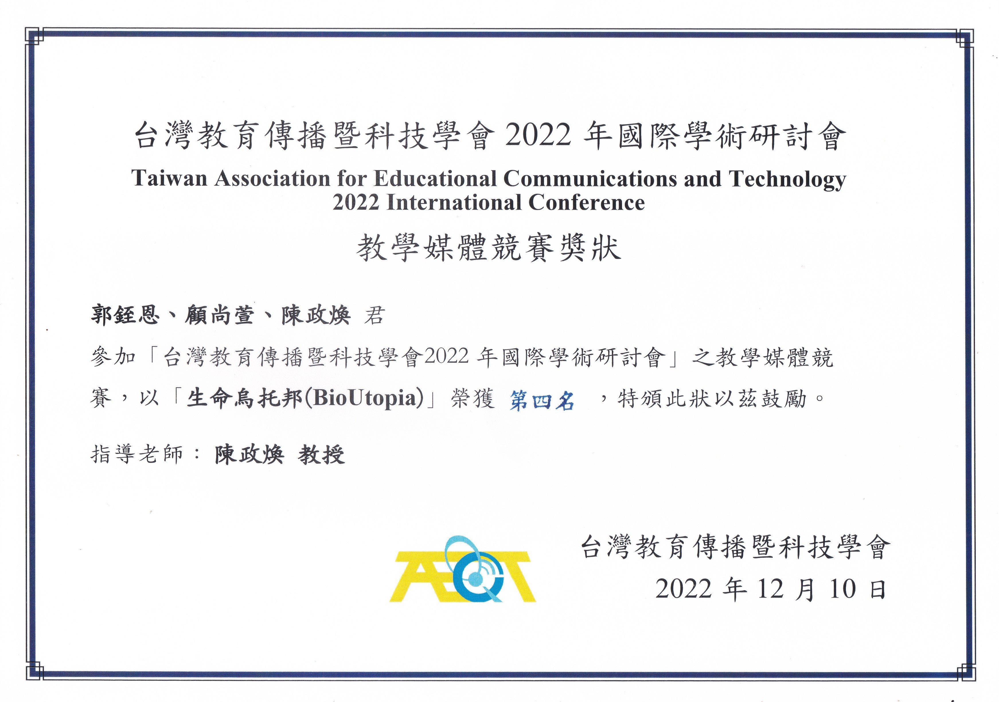
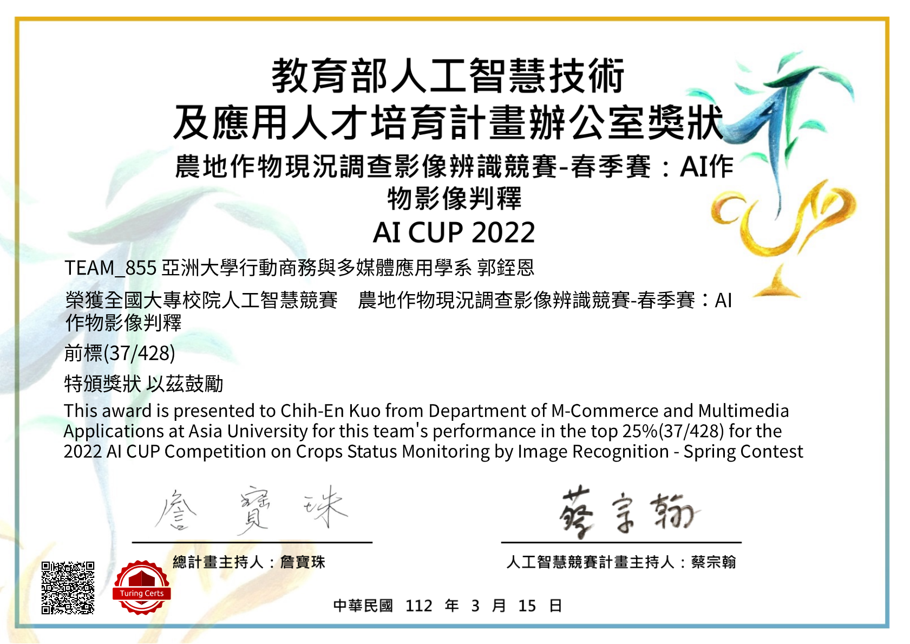
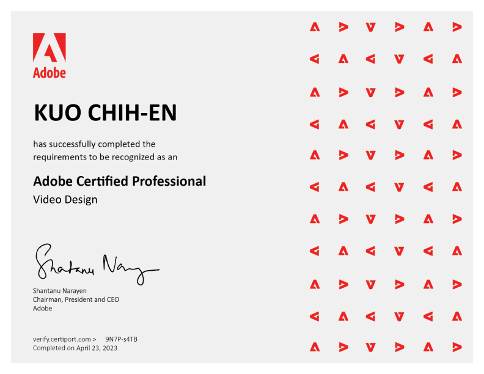
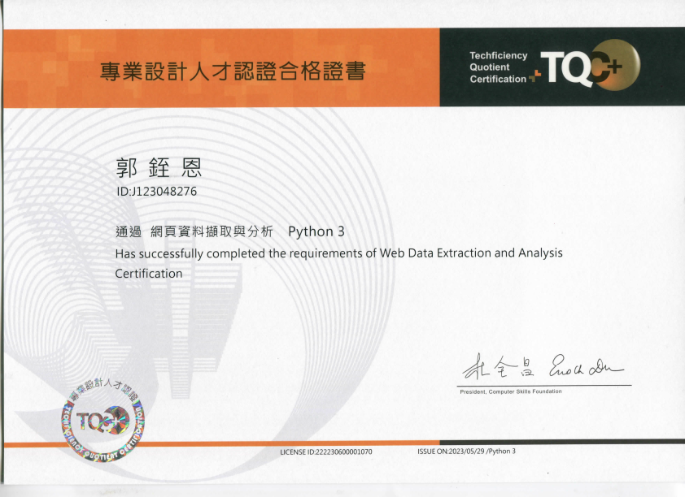
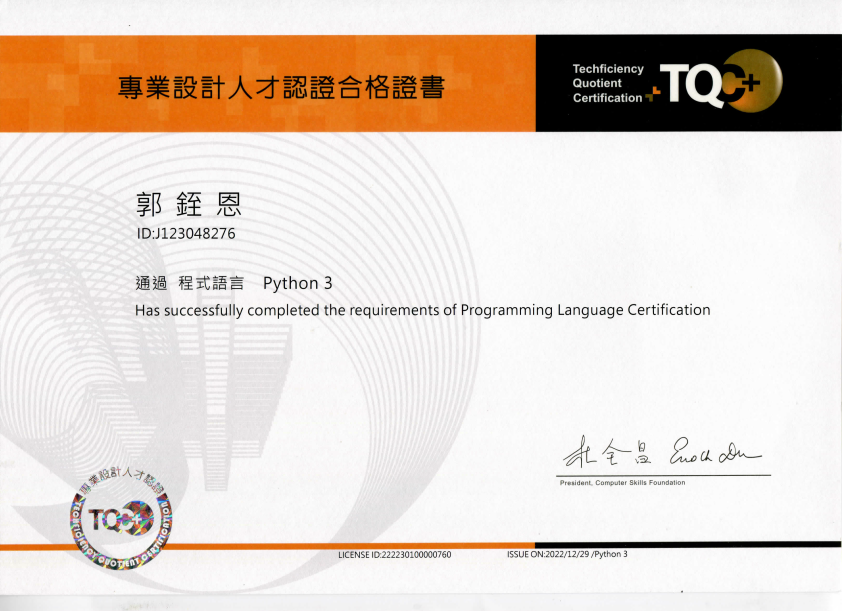
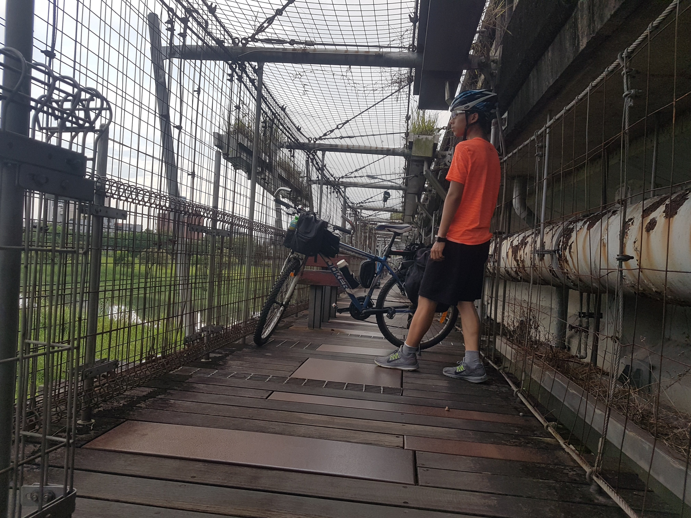

About
Zhuyin
Open to software development, IT & MIS roles
Residence: Hsinchu, Taiwan (R.O.C.)
My name is Chih-En Kuo, and you’re welcome to call me Zhuyin. I hold a master’s degree from the Graduate Institute of Network Learning Technology at National Central University. Having my own computer in elementary school sparked an interest in software and the internet. In junior high, a slow Android tablet led me to research firmware flashing, try Recovery, and explore Linux and the command line; looking up answers and trying different approaches gradually became a habit for working through problems. High school brought C, Java, Python, SQL, PHP, and my first blog.
At Asia University, I studied M-Commerce and Multimedia Application, completed a second major in Computer Science and Information Engineering, and took psychology electives. I also built my own WordPress website, developed educational games with Unity and C#, and entered a crop image classification competition using Python and PyTorch.
During my graduate studies, I independently built the mathematics problem-solving system for my thesis, integrating an interactive canvas, a PHP backend, MySQL records, AI-agent coordination, and prompt strategies so students could express their reasoning through handwriting, drawings, and text while collaborating with AI.

永遠相信美好的事即將發生Projects and implementation
All projects →Master’s thesis · Web application
Making Thinking Visible: AI Mathematics Companion
A mathematics problem-solving system combining an interactive canvas and multiple AI agents. Students express their reasoning through handwriting, drawings, and text; the system analyzes the canvas and recent dialogue to adapt guidance to an estimated problem-solving stage.
My contribution
Independently built the interactive canvas, PHP / MySQL backend, AI-agent coordination, prompt strategies, and feature integration. Study questionnaires and scales drew on instruments used by senior research-group members and prior literature.
University project · TAECT 2022 fourth place
BioUtopia · Dreaming about Health and Biology
A first-person RPG that maps human organs to familiar places. Storytelling, cell characters, and four types of game challenges bring together Grade 7 biology and health education. It received fourth place at TAECT 2022 and was presented at TWELF 2023.
My contribution
Built many Unity scenes and wrote C# code. Prepared curriculum content, questions, and digital education research with teammates to complete the game.
NSTC research project · Unity / VRChat SDK development
Advancing metaverse education: Exploring new possibilities of immersive VR-based collaborative learning
An immersive learning environment built with Unity and the VRChat SDK to support multi-user interaction around junior-high STEM and the SDGs. An island scene for climate action lets students explore sea-level rise and discuss their ideas within the environment.
Technologies I have learned and used
- Python
- C#
- PHP
- Java
- JavaScript
- HTML5 / CSS
- MySQL
- PyTorch
- TensorFlow
Development & creative tools
- GitHub
- Unity
- Visual Studio Code
- Microsoft Office
- 3ds Max
- Adobe Photoshop
- Adobe Premiere Pro
- WordPress
- Git
- AWS
- Microsoft Azure
- Ubuntu
Education
Graduate Institute of Network Learning Technology · Master’s degree
Graduate study focused on research methods, learning technologies, and AI system implementation. My master’s thesis independently delivered a web system in which students use drawings and text to interact with AI for mathematics problem solving.
Master degree


Master degreeM-Commerce and Multimedia Application · Double major in Computer Science and Information Engineering
Completed my undergraduate degree with coursework in web development, programming, databases, artificial intelligence, Unity / XR, multimedia, and digital learning. In M-Commerce coursework, I also learned the roles and basic purposes of CRM, ERP, and MIS.
I took part in a digital educational game project, conference publications, and an AI image-recognition competition.
Bachelor degree


Bachelor degreeEarly education (K–12)
Before university (K–12)
I began exploring websites and programming in high school and built a personal blog, which became the starting point for my later work in web and information technology.
Competition results
2022
Fourth place
TAECT digital media competition
Digital educational game project: Dreaming about Health and Biology.


Related project：BioUtopia · Dreaming about Health and Biology ↗
View result2022
Team ranked in the top 25%
AI CUP crop image-recognition competition · Spring
National AI competition for university students; crop image interpretation project.


Teaching & activities
Children’s camp teaching assistant
Nianbada Childhood School’s Treetopia play space was established in Zhubei in 2011. It offers traditional games, outdoor activities, and hands-on building so children can explore and cooperate through play.
I began assisting at its children’s camps in 2019. I helped mixed-age groups complete team tasks and joined them in making fires, cooking, outdoor games, and building treehouses. Working with them helped me discover how much I enjoy learning and exploring alongside children.
Programming camp teaching assistant
Coding Ape offers children’s programming camps involving Minecraft, Python, and APCS-related learning through hands-on activities and tasks.
As a teaching assistant, I helped students understand questions, work with programs, and complete learning tasks, adapting support to different ages and learning progress.
Children’s camp activity staff
Participated in children’s camps with the Humanistic Education Foundation, supporting exploration, cooperation, and challenges through outdoor activities and group tasks. As an activity staff member, I supported camp delivery and accompanied students, developing experience in working with children and responding to on-site needs.
Children’s reading volunteer
Volunteered in church-based children’s reading activities, using reading support and interaction to help children engage with learning while developing communication skills and awareness of different learning needs.
Certificates
MOS Excel
English certificate
ACP Video Design（Photoshop 與 Premiere）


English certificateTQC+ 網頁資料擷取與分析 Python 3


English certificateTQC+ 程式語言 Python 3


English certificateMTA HTML5 Application Development Fundamentals
English certificate
CIW Web Security Associate
English certificate
Publications
View all publications 8
2026 · Global Chinese Conference on Computers in Education (GCCCE) · Conference paper · Hong Kong, China
從溫暖的夥伴到得力的教練：為小學生設計一款人性化的AI閱讀同伴
Designed an AI reading companion that adapts its role across stages of human–AI relationship development, balancing emotional support and reading guidance. A four-week pilot involved seven fifth graders, with an in-depth analysis of one sustained user. The findings are exploratory and do not establish long-term effectiveness.
2026 · Taiwan E-Learning Forum (TWELF) · Conference paper · Nantou, Taiwan
基於情境工程之長期適性化AI閱讀同伴系統設計
Presented an AI reading companion built around a student model, context engineering, and cooperating agents. Reading records, conversations, and long-term summaries inform interaction stages and response strategies. An avatar, voice and text interaction, and dashboards make the evolving reading context and companion relationship visible.
2025 · Global Chinese Conference on Computers in Education (GCCCE) · Conference paper · Wuxi, China
AI閱讀遊戲：結合AI打造多角色線上互動平台提升閱讀動機
Designed a multiplayer reading game using Azure AI, with AI animal companions, cooperation and competition, and feedback from an AI game host. The paper describes roles and game mechanics and plans questionnaire and conversation analyses of reading motivation. It primarily reports system design and a research plan.
2025 · Taiwan E-Learning Forum (TWELF) · Conference paper · Chiayi, Taiwan
探討家庭閱讀對學生互動和學習行為的影響
Designed a parent–teacher–student reading community connecting home and school through book registration, reading photos, book-talk videos, discussions, and feedback. Shared records support collaboration, with planned analyses of reading habits and interaction patterns. Data were still limited, so effectiveness remained to be studied.
2024 · Global Chinese Conference on Computers in Education (GCCCE) · Conference paper · Chongqing, China
支持學生於沉浸式虛擬實境社交互動並結合STEM與SDGs的學習環境開發
Developed a VRChat learning environment integrating STEM and the SDGs for junior-high students using head-mounted displays. The Climate Action theme connects sea-level rise, the greenhouse effect, and energy technology through interactive objects, multimedia, and social discussion. The contribution centers on environment design and development.
2024 · Global Chinese Conference on Computers in Education (GCCCE) · Conference paper · Chongqing, China
紙筆遊戲不僅是遊戲：探討非數位國小數學教育的遊戲式學習
Proposed a study integrating three low-cost paper-and-pencil games into mathematics lessons for third and fourth graders. The design compares game-supported and conventional teaching using interest and self-efficacy measures, questionnaires, and interviews. The paper presents a research method, rather than verified learning gains.
2024 · International Conference on Computers in Education (ICCE) · Conference paper · Manila, Philippines
Supporting Teacher-Student Book Talk and Book Wish Lists with AI-Driven Technology
Used teacher interviews and design-based research to digitize book wish lists, reading histories, and teacher–student book-talk records, with AI support for processing conversations and suggesting follow-up questions. Feedback from five teachers described benefits for record management and book-talk support, alongside additional content-management work.
2023-03 · Taiwan E-Learning Forum (TWELF) · Conference paper · Pingtung, Taiwan
以類比學習為基礎開發之國中生物與健康跨領域角色扮演遊戲
Developed an interdisciplinary role-playing game connecting junior-high biology and health education. Stories, analogous scenes, and tasks address nutrition, transport, coordination, and homeostasis. The paper explains how curriculum content becomes a game environment and presents the research behind Dreaming about Health and Biology / BioUtopia.
Travel & life
Take curiosity on the road,
keep learning in new places.
I follow technology news, especially phones, wearables, and computer hardware, and enjoy travelling, chess, Reversi, cycling, badminton, and bowling. After high school, I fulfilled a long-held wish to cycle around Taiwan and recorded the journey on my blog; conference trips also offer opportunities to explore new places.
Across different children’s camps, I have joined children in making fires, cooking, outdoor games, and building treehouses, accompanied them on a cycling trip from Hualien to Taitung, and helped with Minecraft programming and Python and APCS exam preparation. Those experiences helped me discover how much I enjoy spending time with children, alongside volunteering in a church reading program.
